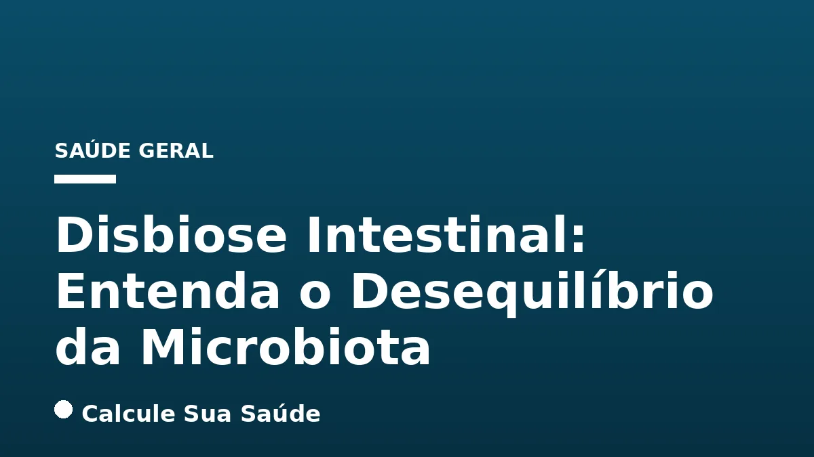

Aviso médico importante
Este conteúdo é educativo e informativo e não substitui a consulta, o diagnóstico ou o tratamento de um profissional de saúde. Em caso de sintomas, procure orientação médica.
Índice do Artigo
- 1. O Que é Disbiose Intestinal?
- 2. A Complexidade da Microbiota Humana e Suas Funções Essenciais
- 3. Causas e Fatores de Risco para o Desenvolvimento da Disbiose
- 4. Sinais e Sintomas Comuns da Disbiose Intestinal
- 5. Disbiose e a Barreira Intestinal: Entendendo a Permeabilidade
- 6. O Eixo Intestino-Cérebro e a Saúde Mental
- 7. Disbiose e Doenças Crônicas: Uma Conexão Crescente
- 8. Diagnóstico da Disbiose: Desafios e Métodos Atuais
- 9. Estratégias Dietéticas para o Reequilíbrio da Microbiota
- 10. Probióticos, Prebióticos e Pós-bióticos: Entendendo os Suplementos
- 11. O Papel do Estilo de Vida na Saúde Intestinal
- 12. Abordagens Terapêuticas e Tratamento da Disbiose
- 13. Prevenção da Disbiose: Hábitos para uma Microbiota Saudável
- 14. Mitos e Verdades sobre a Disbiose Intestinal
- 15. Conclusão: O Caminho para o Equilíbrio Intestinal e a Saúde Integral
- 16. Perguntas frequentes
A disbiose intestinal, um termo que tem ganhado destaque no cenário da saúde, refere-se a um desequilíbrio na composição e função da microbiota que habita o nosso trato gastrointestinal. Longe de ser um mero conjunto de bactérias, a microbiota intestinal é um ecossistema complexo e dinâmico, composto por trilhões de microrganismos – bactérias, vírus, fungos e arqueias – que desempenham papéis cruciais na manutenção da nossa saúde.
Quando esse delicado equilíbrio é perturbado, seja pela redução da diversidade de espécies benéficas, pelo aumento de microrganismos potencialmente patogênicos ou por alterações em suas funções metabólicas, o corpo pode sinalizar com uma série de sintomas que vão muito além do sistema digestivo. A disbiose não é uma doença em si, mas um estado que pode contribuir para o desenvolvimento ou agravamento de diversas condições de saúde.
Neste artigo aprofundado, exploraremos o universo da disbiose intestinal, desde sua definição e as funções vitais da microbiota até as causas subjacentes, os sintomas que ela pode manifestar e as abordagens baseadas em evidências para restaurar o equilíbrio. Nosso objetivo é fornecer informações claras e científicas para que você compreenda melhor essa condição e saiba como cuidar da sua saúde intestinal de forma eficaz.
Em resumo
- Disbiose é o desequilíbrio da microbiota intestinal, caracterizado pela alteração na quantidade, diversidade ou função dos microrganismos.
- As causas são multifatoriais, incluindo dieta inadequada (rica em ultraprocessados, pobre em fibras), uso de antibióticos, estresse crônico e fatores ambientais.
- Os sintomas podem ser digestivos (gases, inchaço, diarreia, constipação) e sistêmicos (fadiga, alterações de humor, problemas de pele, imunidade baixa).
- A disbiose está associada a diversas doenças crônicas, como doenças inflamatórias intestinais, síndrome do intestino irritável, obesidade e condições autoimunes.
- O diagnóstico é clínico, complementado por testes laboratoriais que avaliam a composição e função da microbiota, mas não há um exame único padrão ouro.
- O manejo envolve mudanças dietéticas (aumento de fibras, redução de ultraprocessados), estilo de vida (manejo do estresse, sono, exercício) e, em alguns casos, suplementação com probióticos e prebióticos, sempre com orientação profissional.
1. O Que é Disbiose Intestinal?
A disbiose intestinal é um termo médico que descreve um estado de desequilíbrio na comunidade de microrganismos que habitam o trato gastrointestinal humano, conhecida como microbiota intestinal. Em condições de saúde, essa comunidade vive em um estado de eubiose, caracterizado por uma grande diversidade de espécies microbianas, predominância de bactérias benéficas e uma relação simbiótica com o hospedeiro. A disbiose ocorre quando há uma alteração nessa homeostase, seja por uma redução da diversidade microbiana, um aumento de bactérias potencialmente patogênicas ou uma diminuição das espécies promotoras de saúde.
Essa alteração pode se manifestar de diversas formas, como a perda de bactérias produtoras de ácidos graxos de cadeia curta (AGCC), como o butirato, que são vitais para a saúde dos colonócitos e para a integridade da barreira intestinal. Outras manifestações incluem o supercrescimento de bactérias oportunistas ou a colonização por microrganismos que não deveriam estar presentes em grandes quantidades. O impacto da disbiose não se restringe ao intestino, podendo ter repercussões sistêmicas devido à complexa interação entre a microbiota e o restante do corpo.
2. A Complexidade da Microbiota Humana e Suas Funções Essenciais
A microbiota intestinal é um dos ecossistemas mais densos e complexos do planeta, abrigando cerca de 100 trilhões de microrganismos, superando em número as células do próprio corpo humano. Ela é composta principalmente por bactérias dos filos Firmicutes e Bacteroidetes, mas também inclui Actinobacteria, Proteobacteria e Verrucomicrobia, além de fungos, vírus e arqueias. Cada indivíduo possui uma microbiota única, influenciada por fatores genéticos, ambientais e, principalmente, pela dieta e estilo de vida.
As funções da microbiota saudável são vastas e indispensáveis. Ela atua na digestão de carboidratos complexos que as enzimas humanas não conseguem quebrar, produzindo AGCC que servem como fonte de energia para as células do cólon e possuem propriedades anti-inflamatórias. Além disso, a microbiota sintetiza vitaminas essenciais, como a K e algumas do complexo B, e desempenha um papel crucial no desenvolvimento e modulação do sistema imunológico, treinando-o para distinguir entre patógenos e comensais. Uma microbiota equilibrada também protege contra a colonização por microrganismos patogênicos e contribui para a integridade da barreira intestinal.
3. Causas e Fatores de Risco para o Desenvolvimento da Disbiose
A disbiose não surge de uma única causa, mas é o resultado de uma interação complexa de fatores ambientais, dietéticos e de estilo de vida. A dieta é um dos principais moduladores da microbiota. Um consumo elevado de alimentos ultraprocessados, ricos em gorduras saturadas, açúcar e aditivos químicos, e pobre em fibras alimentares, pode empobrecer a diversidade microbiana e favorecer o crescimento de espécies menos benéficas.
O uso indiscriminado de antibióticos é outra causa significativa, pois esses medicamentos, embora essenciais para combater infecções bacterianas, não distinguem entre bactérias patogênicas e benéficas, causando um impacto profundo na composição da microbiota. Outros medicamentos, como inibidores da bomba de prótons (para refluxo) e anti-inflamatórios não esteroides (AINEs), também podem alterar o ambiente intestinal. O estresse crônico, a falta de sono adequado, o sedentarismo, a exposição a toxinas ambientais e o consumo excessivo de álcool são fatores adicionais que contribuem para o desequilíbrio. Condições médicas preexistentes, como doenças inflamatórias intestinais, diabetes e obesidade, também podem estar associadas à disbiose.
4. Sinais e Sintomas Comuns da Disbiose Intestinal
Os sintomas da disbiose são variados e podem afetar tanto o sistema digestivo quanto outras partes do corpo, tornando seu reconhecimento um desafio. No trato gastrointestinal, os sinais mais comuns incluem inchaço abdominal, excesso de gases, dor ou desconforto abdominal, alterações no hábito intestinal (como diarreia crônica ou constipação intestinal), e azia ou refluxo.
Além dos sintomas digestivos, a disbiose pode manifestar-se através de sinais sistêmicos. Fadiga persistente, dificuldade de concentração (nevoeiro cerebral), alterações de humor (como ansiedade e depressão), dores articulares e musculares inexplicáveis, e problemas de pele como acne adulta, eczema ou rosácea, são frequentemente relatados. A imunidade comprometida, resultando em infecções recorrentes ou maior sensibilidade a alergias alimentares, também pode ser um indicativo. É crucial lembrar que esses sintomas podem ser causados por diversas condições, e a avaliação médica é indispensável para um diagnóstico preciso.
Tabela: Sintomas Comuns Associados à Disbiose Intestinal
| Sintomas Digestivos | Sintomas Sistêmicos |
|---|---|
| Inchaço abdominal | Fadiga crônica |
| Gases excessivos | Alterações de humor (ansiedade, depressão) |
| Dor ou desconforto abdominal | Dificuldade de concentração (nevoeiro cerebral) |
| Diarreia crônica ou intermitente | Problemas de pele (acne, eczema) |
| Constipação intestinal | Dores articulares e musculares |
| Azia, refluxo gastroesofágico | Imunidade baixa, infecções recorrentes |
| Náuseas | Alergias ou sensibilidades alimentares |
5. Disbiose e a Barreira Intestinal: Entendendo a Permeabilidade
Um dos mecanismos mais importantes pelos quais a disbiose afeta a saúde é através da alteração da barreira intestinal, um revestimento de células epiteliais que separa o conteúdo do intestino da corrente sanguínea. Essa barreira é crucial para permitir a absorção de nutrientes e, ao mesmo tempo, impedir a passagem de toxinas, bactérias e partículas de alimentos não digeridas para o corpo. As células da barreira intestinal são unidas por estruturas chamadas tight junctions (junções apertadas), que regulam a permeabilidade.
Na disbiose, a inflamação e o desequilíbrio microbiano podem danificar essas tight junctions, levando a um aumento da permeabilidade intestinal, um fenômeno popularmente conhecido como “intestino permeável” ou “leaky gut”. Quando a barreira se torna mais permeável, substâncias que normalmente seriam contidas no intestino podem vazar para a corrente sanguínea, desencadeando uma resposta imunológica e inflamatória sistêmica. Essa inflamação crônica de baixo grau é um fator contribuinte para diversas doenças, desde autoimunes até metabólicas e neurológicas.
6. O Eixo Intestino-Cérebro e a Saúde Mental
A conexão entre o intestino e o cérebro é uma via de comunicação bidirecional complexa, conhecida como eixo intestino-cérebro. Essa comunicação envolve o sistema nervoso entérico (o “segundo cérebro” no intestino), o sistema nervoso central, o sistema nervoso autônomo (incluindo o nervo vago), o sistema endócrino e o sistema imunológico. A microbiota intestinal desempenha um papel fundamental nesse eixo, influenciando a função cerebral e o comportamento.
Microrganismos intestinais produzem uma variedade de neuroativos, incluindo neurotransmissores como serotonina, dopamina e GABA, que podem influenciar o humor, o sono e a cognição. A disbiose pode alterar a produção desses compostos, bem como aumentar a inflamação e a permeabilidade intestinal, o que, por sua vez, pode afetar a função cerebral. Estudos sugerem que o desequilíbrio da microbiota pode estar associado a condições como ansiedade, depressão, transtorno do espectro autista e até mesmo doenças neurodegenerativas. O manejo da disbiose, portanto, pode ter um impacto positivo na saúde mental e no bem-estar geral.
7. Disbiose e Doenças Crônicas: Uma Conexão Crescente
A pesquisa científica tem revelado uma associação cada vez mais clara entre a disbiose intestinal e o desenvolvimento ou progressão de uma ampla gama de doenças crônicas. No âmbito gastrointestinal, a disbiose é um componente central em condições como a Síndrome do Intestino Irritável (SII) e as Doenças Inflamatórias Intestinais (DII), como a Doença de Crohn e a Retocolite Ulcerativa, onde o desequilíbrio microbiano contribui para a inflamação crônica e a disfunção da barreira.
Além do intestino, a disbiose tem sido implicada em doenças metabólicas, incluindo obesidade, diabetes tipo 2 e síndrome metabólica, através de mecanismos que envolvem a regulação do apetite, o metabolismo energético e a inflamação. Condições autoimunes, como artrite reumatoide, lúpus e esclerose múltipla, também mostram fortes ligações com a disbiose, sugerindo que a microbiota pode modular a resposta imune sistêmica. Doenças cardiovasculares, certos tipos de câncer (especialmente colorretal) e até mesmo condições hepáticas não alcoólicas (esteatose hepática) são áreas de intensa investigação que apontam para o papel da disbiose como um fator de risco ou agravante.
8. Diagnóstico da Disbiose: Desafios e Métodos Atuais
O diagnóstico da disbiose intestinal é complexo e não existe um único “teste de disbiose” padrão ouro universalmente aceito. Isso se deve à enorme variabilidade da microbiota entre indivíduos e à falta de consenso sobre o que constitui uma “microbiota ideal”. Geralmente, o diagnóstico é feito com base na avaliação clínica detalhada dos sintomas do paciente, seu histórico médico, dieta e estilo de vida.
No entanto, existem ferramentas laboratoriais que podem auxiliar na identificação de padrões de disbiose. A análise de fezes, utilizando técnicas avançadas como o sequenciamento genético (16S rRNA) ou a metagenômica, permite identificar a composição das espécies bacterianas, sua diversidade e abundância relativa. Testes que avaliam metabólitos microbianos, como ácidos graxos de cadeia curta, ácidos orgânicos e marcadores de inflamação fecal (como a calprotectina), também podem fornecer informações valiosas sobre a função da microbiota e a integridade intestinal. É fundamental que a interpretação desses resultados seja feita por um profissional de saúde qualificado, que possa correlacioná-los com o quadro clínico do paciente e propor um plano de manejo individualizado.
9. Estratégias Dietéticas para o Reequilíbrio da Microbiota
A dieta é a ferramenta mais poderosa para modular a microbiota intestinal. Para combater a disbiose e promover a eubiose, é fundamental adotar uma alimentação rica em diversidade e nutrientes. O pilar dessa estratégia é o aumento do consumo de fibras alimentares, presentes em frutas, vegetais, legumes, grãos integrais e sementes. As fibras atuam como prebióticos, servindo de alimento para as bactérias benéficas e estimulando seu crescimento e atividade.
É igualmente importante reduzir drasticamente o consumo de açúcar refinado e alimentos ultraprocessados, que são pobres em fibras e nutrientes e ricos em aditivos que podem prejudicar a microbiota. Incluir fontes de antioxidantes, como frutas vermelhas, vegetais folhosos e chás, ajuda a combater a inflamação. Uma dieta baseada em plantas, como a dieta mediterrânea, que enfatiza alimentos integrais, gorduras saudáveis (azeite de oliva) e proteínas magras, é um excelente modelo para promover a saúde intestinal. A hidratação adequada também é crucial para a função intestinal e a saúde da microbiota.
10. Probióticos, Prebióticos e Pós-bióticos: Entendendo os Suplementos
Além das mudanças dietéticas, a suplementação pode ser uma ferramenta útil no manejo da disbiose, mas deve ser utilizada com critério e sob orientação profissional.
Probióticos
Probióticos são microrganismos vivos que, quando administrados em quantidades adequadas, conferem um benefício à saúde do hospedeiro. Eles podem ajudar a restaurar a diversidade microbiana, inibir o crescimento de patógenos, fortalecer a barreira intestinal e modular a resposta imune. Diferentes cepas de probióticos (ex: Lactobacillus, Bifidobacterium) têm efeitos específicos, e a escolha deve ser baseada na condição do paciente e nas evidências científicas disponíveis. Alimentos fermentados como iogurte natural, kefir, kombucha e chucrute são fontes naturais de probióticos.
Prebióticos
Prebióticos são componentes alimentares não digeríveis que promovem seletivamente o crescimento e/ou a atividade de uma ou de um número limitado de bactérias no cólon que conferem benefícios à saúde. São fibras que servem de alimento para as bactérias benéficas. Fontes alimentares incluem alho, cebola, aspargos, banana verde, alcachofra, aveia e leguminosas. A suplementação pode ser feita com FOS (fruto-oligossacarídeos) e inulina, entre outros.
Pós-bióticos
Pós-bióticos são preparações de microrganismos inativados e/ou seus componentes que conferem um benefício à saúde do hospedeiro. Eles incluem metabólitos microbianos (como os AGCC), componentes da parede celular bacteriana e enzimas. A pesquisa sobre pós-bióticos é promissora, oferecendo uma nova abordagem para modular a saúde intestinal sem a necessidade de introduzir microrganismos vivos.
Tabela: Fontes Alimentares de Probióticos e Prebióticos
| Tipo | Exemplos de Alimentos | Benefícios |
|---|---|---|
| Probióticos | Iogurte natural, Kefir, Kombucha, Chucrute, Kimchi, Tempeh | Introduzem bactérias benéficas, melhoram a digestão e imunidade |
| Prebióticos | Alho, Cebola, Aspargos, Banana verde, Alcachofra, Aveia, Leguminosas, Chicória | Alimentam as bactérias benéficas existentes, estimulam seu crescimento |
11. O Papel do Estilo de Vida na Saúde Intestinal
Além da dieta, diversos aspectos do estilo de vida exercem uma influência profunda na saúde da microbiota intestinal. O estresse crônico, por exemplo, é um modulador potente da microbiota. O eixo intestino-cérebro garante que o estresse psicológico possa alterar a composição microbiana, a função da barreira intestinal e a motilidade gastrointestinal. Técnicas de manejo do estresse, como meditação, yoga, exercícios de respiração e mindfulness, são essenciais para promover um ambiente intestinal mais saudável.
A qualidade do sono também é um fator crítico. A privação do sono ou um ritmo circadiano desregulado podem impactar negativamente a microbiota, aumentando a inflamação e a permeabilidade intestinal. Priorizar um sono reparador de 7 a 9 horas por noite é fundamental. A atividade física regular, por sua vez, tem sido associada a uma maior diversidade microbiana e à produção de AGCC. Mesmo caminhadas diárias podem ter um efeito benéfico. Por fim, evitar o tabagismo e o consumo excessivo de álcool é crucial, pois ambos são conhecidos por prejudicar a integridade da barreira intestinal e alterar a microbiota de forma desfavorável.
12. Abordagens Terapêuticas e Tratamento da Disbiose
O tratamento da disbiose é altamente individualizado e deve ser guiado por um profissional de saúde, como um médico gastroenterologista, nutrólogo ou nutricionista. A abordagem terapêutica geralmente segue um protocolo que visa remover os fatores agressores, repor o que está em falta, reinocular bactérias benéficas e reparar a barreira intestinal.
Inicialmente, focam-se nas mudanças dietéticas e de estilo de vida, conforme detalhado nas seções anteriores. Isso pode incluir a eliminação temporária de alimentos que causam sensibilidade ou inflamação, seguido por uma reintrodução gradual. A suplementação com probióticos e prebióticos pode ser indicada para repovoar o intestino com bactérias benéficas e nutrir as existentes. Em alguns casos, podem ser utilizados medicamentos para tratar sintomas específicos, como supercrescimento bacteriano no intestino delgado (SIBO), ou para reduzir a inflamação.
Em situações mais graves e específicas, como infecções recorrentes por Clostridioides difficile, o transplante de microbiota fecal (TMF) tem se mostrado uma opção terapêutica eficaz, embora seja um procedimento complexo e reservado para indicações muito específicas. O acompanhamento multidisciplinar é frequentemente o mais eficaz, garantindo que todos os aspectos da saúde do paciente sejam abordados.
13. Prevenção da Disbiose: Hábitos para uma Microbiota Saudável
Prevenir a disbiose é mais eficaz do que tratá-la, e a boa notícia é que muitas das estratégias de prevenção são hábitos saudáveis que beneficiam a saúde geral. A base da prevenção reside em uma dieta rica e diversificada, com ênfase em alimentos integrais, frutas, vegetais, leguminosas e grãos. Uma ampla variedade de alimentos vegetais garante um espectro diversificado de fibras e fitoquímicos que nutrem diferentes espécies microbianas.
O uso consciente de antibióticos é fundamental: utilizá-los apenas quando estritamente necessário e seguir a prescrição médica para evitar o uso excessivo ou inadequado. Gerenciar o estresse através de técnicas de relaxamento e garantir um sono de qualidade são pilares importantes. A prática regular de atividade física e a exposição à natureza, que pode aumentar a diversidade microbiana através do contato com diferentes microrganismos ambientais, também contribuem para uma microbiota robusta. Para bebês, a amamentação exclusiva nos primeiros meses de vida é um dos fatores mais importantes para o estabelecimento de uma microbiota saudável.
14. Mitos e Verdades sobre a Disbiose Intestinal
Com a crescente popularidade do tema, muitos mitos e informações equivocadas sobre a disbiose circulam. É importante desmistificar alguns pontos para uma compreensão clara e baseada em evidências.
Mito: Disbiose é uma doença única com um tratamento padrão.
Verdade: Disbiose é um termo guarda-chuva para um desequilíbrio microbiano. Existem muitos tipos de disbiose, com diferentes causas e manifestações. O tratamento é sempre individualizado, focado nas causas subjacentes e nos sintomas específicos do paciente.
Mito: Qualquer probiótico resolve a disbiose.
Verdade: A eficácia dos probióticos é cepa-dependente, ou seja, diferentes cepas têm diferentes efeitos. Um probiótico que funciona para uma condição pode não ser eficaz para outra. A escolha deve ser feita com base em evidências científicas e orientação profissional.
Mito: Basta cortar glúten e lactose para curar a disbiose.
Verdade: Embora algumas pessoas com sensibilidade ou intolerância a glúten e lactose possam se beneficiar da restrição, essas dietas não são uma solução universal para a disbiose. A restrição desnecessária pode até reduzir a diversidade microbiana. A abordagem deve ser personalizada.
Mito: Testes de fezes são sempre precisos para diagnosticar disbiose.
Verdade: Testes de fezes podem fornecer informações valiosas sobre a composição da microbiota, mas sua interpretação é complexa. Eles não são um diagnóstico definitivo de disbiose por si só e devem ser correlacionados com a clínica do paciente. A ciência ainda está evoluindo para definir padrões de normalidade.
15. Conclusão: O Caminho para o Equilíbrio Intestinal e a Saúde Integral
A disbiose intestinal é um conceito fundamental para a compreensão da saúde moderna, revelando a intrínseca conexão entre nosso intestino e o bem-estar geral. Longe de ser um problema isolado, o desequilíbrio da microbiota pode ser um elo em uma cadeia de eventos que leva a uma série de sintomas e condições crônicas, impactando desde a digestão e a imunidade até a saúde mental e metabólica.
A boa notícia é que a microbiota é notavelmente resiliente e responsiva a intervenções. Através de escolhas conscientes na dieta, um estilo de vida equilibrado e, quando necessário, intervenções terapêuticas direcionadas, é possível restaurar o equilíbrio e promover a eubiose. Lembre-se que cada indivíduo é único, e o caminho para a saúde intestinal ideal deve ser personalizado. Por isso, é fundamental buscar a orientação de profissionais de saúde qualificados para um diagnóstico preciso e um plano de tratamento eficaz. Investir na saúde do seu intestino é investir na sua saúde integral.
16. Perguntas frequentes
O que é disbiose intestinal?
Disbiose intestinal é um desequilíbrio na composição e função da microbiota (flora intestinal), onde há uma redução da diversidade de microrganismos benéficos e um aumento dos potencialmente prejudiciais, impactando a saúde.
Quais são os principais sintomas da disbiose?
Os sintomas podem ser digestivos, como inchaço, gases, dor abdominal, diarreia ou constipação, e também sistêmicos, incluindo fadiga, alterações de humor, problemas de pele e baixa imunidade. A variedade de sintomas torna o diagnóstico desafiador.
Como a alimentação influencia a disbiose?
Uma dieta rica em fibras, frutas, vegetais e alimentos integrais promove uma microbiota saudável e diversa. Por outro lado, o consumo excessivo de alimentos ultraprocessados, açúcar e gorduras saturadas pode empobrecer a microbiota e favorecer o desequilíbrio.
Probióticos e prebióticos são a mesma coisa?
Não. Probióticos são microrganismos vivos benéficos que, quando consumidos em quantidades adequadas, conferem benefícios à saúde. Prebióticos são fibras alimentares não digeríveis que servem de alimento para as bactérias benéficas do intestino, estimulando seu crescimento.
A disbiose pode afetar a saúde mental?
Sim, existe uma comunicação bidirecional entre o intestino e o cérebro, conhecida como eixo intestino-cérebro. A disbiose pode influenciar a produção de neurotransmissores e a inflamação, impactando o humor, a ansiedade e o bem-estar mental.
Como é feito o diagnóstico da disbiose?
O diagnóstico da disbiose é complexo e geralmente se baseia na avaliação clínica dos sintomas, histórico de saúde e, em alguns casos, testes laboratoriais de fezes que analisam a composição da microbiota e seus metabólitos. Não há um exame único padrão ouro.
O tratamento da disbiose é sempre com suplementos?
Não necessariamente. O tratamento é multifacetado e individualizado, focando primeiramente em mudanças na dieta e no estilo de vida. Suplementos como probióticos e prebióticos podem ser indicados, mas sempre sob orientação profissional e baseados nas necessidades específicas.
A disbiose tem cura?
A disbiose é um estado de desequilíbrio que pode ser manejado e revertido com intervenções adequadas, restaurando a eubiose (equilíbrio) da microbiota intestinal. Não se trata de uma 'cura' definitiva, mas sim de um processo contínuo de manutenção da saúde intestinal.
Leia também
Referências e Fontes
1. Organização Mundial da Saúde (OMS). Informações gerais sobre saúde e nutrição.
2. Ministério da Saúde do Brasil. Diretrizes e guias de saúde pública.
3. National Institutes of Health (NIH). Pesquisas e informações sobre o microbioma humano.
4. American Gastroenterological Association (AGA). Recomendações clínicas e educacionais sobre saúde digestiva.
5. Sociedade Brasileira de Gastroenterologia. Publicações e consensos sobre saúde digestiva.
6. European Society for Clinical Nutrition and Metabolism (ESPEN). Orientações sobre nutrição clínica e microbiota.